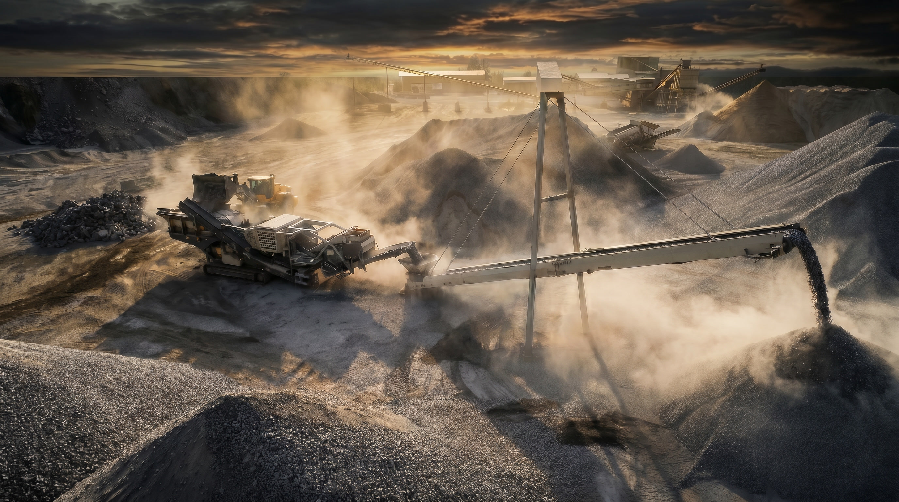

Преимущества
Единственная опора снижает риск наезда техники на опорные конструкции. Меньше препятствий на площадке — меньше внеплановых простоев.
Несущий каркас рассчитан с нормативным запасом прочности; основные элементы выполнены из конструкционной стали 09Г2С.
Подъём конструкции в проектное положение выполняется за два дня, полный монтаж — в нормативные сроки по проекту производства работ.
Конвейер разворачивается вокруг поворотной опоры без демонтажных работ, многократно увеличивая полезную ёмкость склада готовой продукции.
Свободный проезд техники под конвейером и площадки обслуживания с двух сторон обеспечивают безопасный доступ к узлам по всей длине.
Устройство
Несущая ферма на одной поворотной опоре, удержанная тросовыми вантами. Минимум конструкций на земле — максимум свободного пространства под конвейером.
Единственная точка опоры. Вокруг неё конвейер разворачивается, формируя склад без демонтажа.
Высокопрочные ванты удерживают консоль фермы и передают нагрузку на опору.
Несущий каркас из стали 09Г2С с расчётным запасом прочности.
С двух сторон — безопасный доступ к ленте и узлам по всей длине конвейера.
Модельный ряд
Готовая серия вантовых ленточных конвейеров. Выбирайте по требуемой длине и ёмкости склада — и запускайте в изготовление без долгого проектирования.
Объём конуса рассчитан геометрически для установки конвейера на горизонтальной площадке при указанном угле наклона. Уровень ленты на загрузке — +1 м относительно площадки. Угол естественного откоса материала принят 45°.
Направления
Выберите направление — верхняя часть сайта перестроится под него. Проектируем и изготавливаем оборудование для горнодобывающих и перерабатывающих предприятий.
Полный цикл
Проектирование · Изготовление · Доставка · Монтаж · Пуско-наладка
Готовые серии позволяют подобрать оборудование и запустить в производство в кратчайшие сроки. Утверждение и, при необходимости, корректировка проекта под ваши задачи — как правило, 1–2 недели.
Налаженное производство металлоконструкций и отработанные схемы поставки комплектующих и сборки. Ориентировочный срок изготовления — от 1 месяца.
Доставка металлоконструкций и оборудования на площадку заказчика.
Установка по разработанному проекту производства работ (ППР). Подъём в проектное положение двумя кранами — 2 дня, полный монтаж — в нормативные сроки.
Запуск, проверка узлов и вывод оборудования на рабочий режим.
О компании
Инженерное производство оборудования для горнодобывающей отрасли: вантовые конвейеры, вибрационные и колосниковые грохоты, барабаны конвейеров. Проектируем, изготавливаем и модернизируем производственные линии — от отдельных узлов до законченных решений. Выполнены контракты на модернизацию предприятий Калужской, Рязанской и Липецкой областей.
Финансовый директор
Технический директор
Главный инженер
Контакты
Расскажите о вашей площадке и задаче — подберём оборудование из готовых серий или спроектируем под вас.